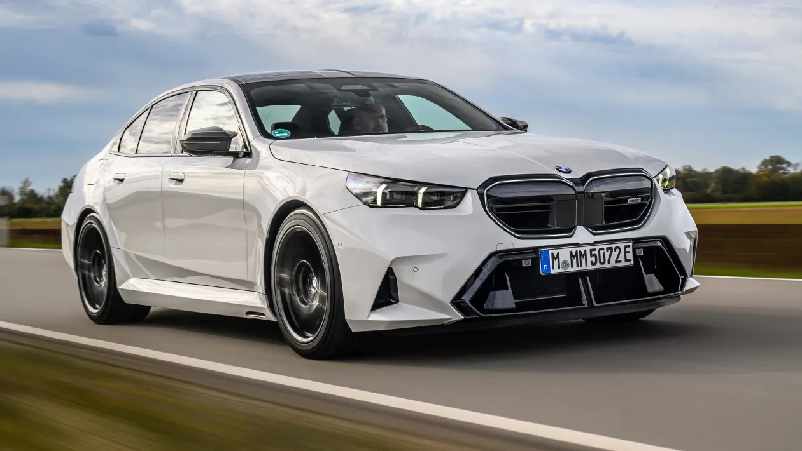
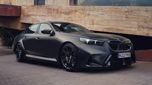
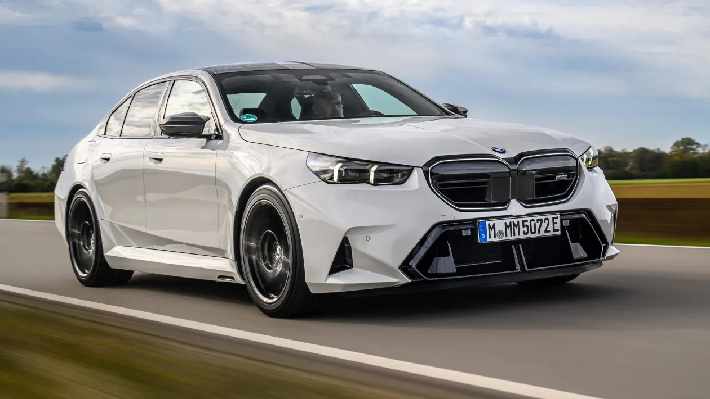
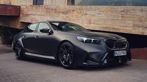

The E34 generation of the M5 was produced from September 1988 to August 1995. Powered by the S38 straight-six engine,
an evolution of the previous generation's straight-six, the E34 was initially produced in a saloon body style, with a second LHD Touring (estate/wagon) version following in 1992.
Production of M5 models began with the painted bodyshell of an E34 5 Series at the BMW Dingolfing plant. The shells were then transported to BMW M GmbH in Garching, where the car was assembled by hand over a period of two weeks.[22][23] Only the South African M5 was entirely assembled at the Rosslyn, South Africa assembly plant from complete knock-down kits supplied from Garching, Germany. The M5 Touring, which was BMW M Division's first estate as well as the last hand-built M car, saw 891 units produced. Total production of the E34 M5 was 12,254 units, of which 8,344 were 3.6-litre and 3,910 were 3.8-litre. In the North American market, only the 3.6-litre version was sold (model years 1991–1993).
 



The G90 M5 is based on the G60 5 Series and shares its powertrain with the XM. The total system output, combining the 4.4L twin-turbo V8 along with the electric motors,
is rated at 535 kW (727 PS; 717 hp) and 1,000 N⋅m (738 lb⋅ft) of torque. BMW M confirmed an estate version on 26 June 2023.
This is the first time that the M5 Touring will be sold in North America. and the first time the M5 has come in an estate body style since the E61.
The BMW M5 G90 features an internal combustion engine that delivers 530 HP and over 750 Nm of torque, boosted by an electric motor which adds an extra 197 hp.
It was showcased at the auto presentation in Munich in 2025. Compared to the hybrid plug-in model, it is significantly better and incomparable in driving performance as well as in driving enjoyment.
It is currently available for order, but the price has not yet been fully finalized; it is expected to be around €180,000.